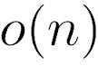
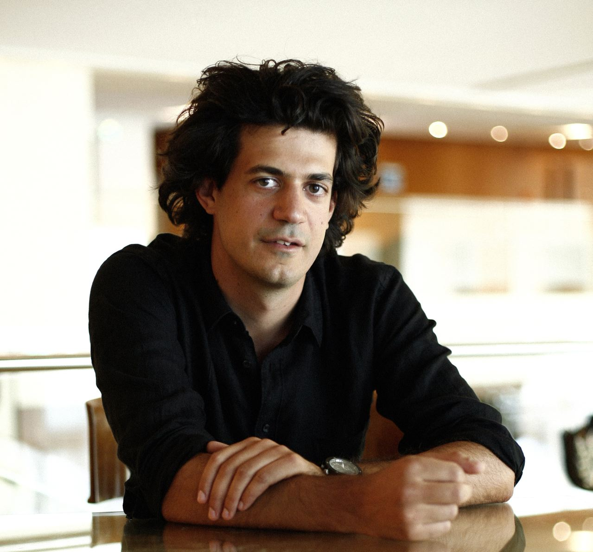
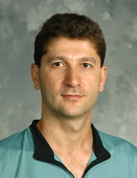
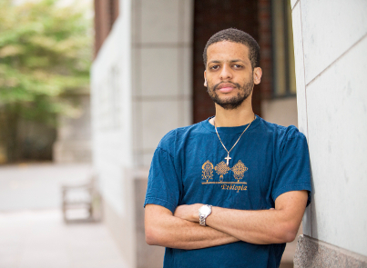
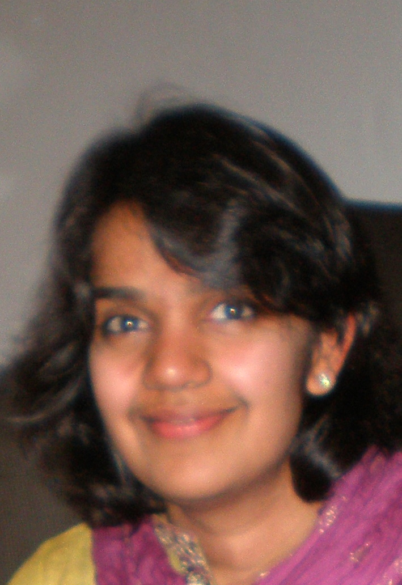
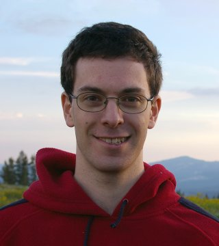

April 10: Sublinear DayThe second Sublinear Algorithms Day will take place at MIT on Friday, April 10, 2015.
This event will bring together researchers from academic institutions in the northeast for a day of interaction and discussion. It will feature talks by experts in the areas of sublinear and streaming algorithms, as well as a poster session for up-and-coming researchers to showcase their work.
Wondering what sublinear algorithms are? See this short description by Ronitt Rubinfeld.
Coffee Break
Opening Remarks
Lunch (on your own)
Poster Session (with coffee and snacks)
List of accepted posters

Costis Daskalakis received his PhD at UC Berkeley under the supervision of Christos Papadimitriou, and is currently an Associate Professor at MIT. His research focuses on algorithmic game theory, computational biology, and applied probability.

Robert Krauthgamer received his PhD at the Weizmann Institute of Science under the supervision of Uriel Feige, where he is now a Professor. His research focuses on analysis of algorithms, including algorithms for data analysis and massive datasets.

Jelani Nelson received his PhD at MIT under the supervision of Erik Demaine and Piotr Indyk, and is currently an Assistant Professor at Harvard University. His research focuses on the development of efficient algorithms for massive datasets, particularly streaming algorithms.

Shubhangi Saraf received her PhD at MIT under the supervision of Madhu Sudan, and is currently an Assistant Professor at Rutgers University. Her research focuses on complexity theory and property testing.

Paul Valiant received his PhD at MIT under the supervision of Silvio Micali, and is currently an Assistant Professor at Brown University. His research focuses on the theory behind big data, scientific computing, and evolution.